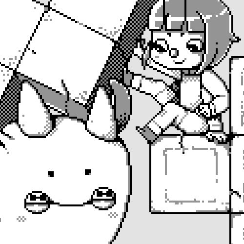
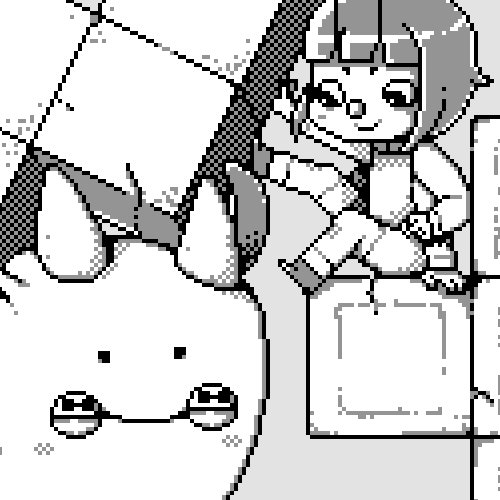

The Uxn ecosystem is a personal computing playground, created to host small tools and games, programmable in its own unique assembly language.
It was designed with an implementation-first mindset with a focus on creating portable graphical applications, the distribution of Uxn projects is akin to sharing game roms for any classic console emulator.
 It was designed by devine for the hundredrabbits projects. The project now has many collaborators and has grown a lot since it's creation.
It was designed by devine for the hundredrabbits projects. The project now has many collaborators and has grown a lot since it's creation.
I make all illustrations related to the project, such as the ones featured in the documentation. The illustrations are drawn on paper, photographed and processed with Gimp. The little ox-like creature represents Uxn.

The humanoid character is named Varvara. The Varvara computer system was designed with a focus on portability, built on top of the Uxn virtual machine
 


More art
uxn asl

The uxn documentation includes hand gestures which we believe might serve a dual purpose, making the Uxntal language as a system that can be used outside of a computer for general computing arithmetic, as well as to help students to familiarize themselves with hexadecimal finger-counting and bitwise operations. The system uses a few existing gestures from ASL, and purposefully creates new gestures to disambiguate others.
Hexadecimal numerals are widely used by computer system designers and programmers because they provide a human-friendly representation of binary-coded values. Uxn gestures differenciate from traditional ASL numbers which are used only in the names of, and references to, labels.
See the full guide.
We worked on this project while waiting for good weather to cross the Strait of Georgia from Nanaimo to Secret Cove on May 27-28th 2022.
I drew these by hand, inked them by hand, photographed them and cleaned them up in Gimp.
Learn the asl alphabet.